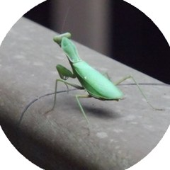

AI Engineer @ 理化学研究所
武藤 克大
Katsuhiro Muto
- AI for Science に取り組んでいます
- OSS contributor
- 『先輩データサイエンティストからの指南書』（技術評論社）
- 趣味：散歩, ランニング
Profile
 専門
専門- 生成AI / 機械学習
 現職
現職- AI for Science
 前職
前職- AI Safety / AI Security & 英語
 大学
大学- 気象（海氷）
 副業
副業- OSS contributor, タイミー
 趣味
趣味- 環境構築, ISUCON, CTF, 個人開発（iOS）
 言語
言語- Python, Vue.js, Svelte, Go
Book
 先輩データサイエンティストからの指南書実務で生き抜くためのエンジニアリングスキル（技術評論社・共著）
先輩データサイエンティストからの指南書実務で生き抜くためのエンジニアリングスキル（技術評論社・共著）
Share
このページのQRコード